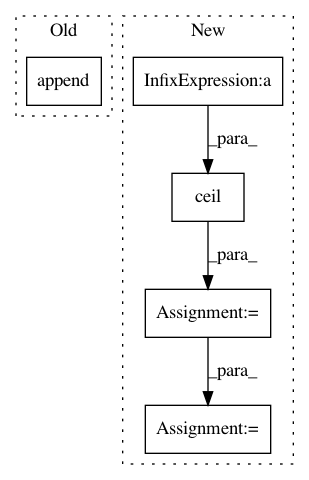

2824bccbb4817467cf63283f5366f4134949d0b4,benchmark/kernel/gin.py,GIN0WithJK,__init__,#GIN0WithJK#Any#Any#Any#Any#,57
Before Change
train_eps=False)
self.convs = torch.nn.ModuleList()
for i in range(num_layers - 1):
self.convs.append(
GINConv(
Sequential(
Linear(hidden, hidden),
ReLU(),
Linear(hidden, hidden),
ReLU(),
BN(hidden),
),
train_eps=False))
self.jump = JumpingKnowledge(mode=mode)
if mode == "cat":
self.lin1 = Linear(num_layers * hidden, hidden)
else:
After Change
self.lin2.reset_parameters()
def forward(self, data):
x, edge_index, batch = data.x, data.edge_index, data.batch
x = self.conv1(x, edge_index)
for conv in self.convs:
x = conv(x, edge_index)
x = global_mean_pool(x, batch)
x = F.relu(self.lin1(x))
x = F.dropout(x, p=0.5, training=self.training)
x = self.lin2(x)
return F.log_softmax(x, dim=-1)
def __repr__(self):
return self.__class__.__name__
class GIN0WithJK(torch.nn.Module):
def __init__(self, dataset, num_layers, hidden):
super(GIN0WithJK, self).__init__()
self.conv1 = GINConv(
In pattern: SUPERPATTERN
Frequency: 3
Non-data size: 5
Instances
Project Name: rusty1s/pytorch_geometric
Commit Name: 2824bccbb4817467cf63283f5366f4134949d0b4
Time: 2019-06-10
Author: ekagra.ranjan@gmail.com
File Name: benchmark/kernel/gin.py
Class Name: GIN0WithJK
Method Name: __init__
Project Name: dmlc/gluon-nlp
Commit Name: 489db85647d6de8a42f9fc5162e1e9ef0831800b
Time: 2018-08-02
Author: leonard@lausen.nl
File Name: gluonnlp/data/dataset.py
Class Name: LanguageModelDataset
Method Name: bptt_batchify
Project Name: ncullen93/torchsample
Commit Name: 1344dee35dbacaaaaabdaf452f0dfe74e3ab50e4
Time: 2017-04-19
Author: ncullen@modv-vlan533.0288.apn.wlan.wireless-pennnet.upenn.edu
File Name: torchsample/modules/super_module.py
Class Name: SuperModule
Method Name: evaluate_loader